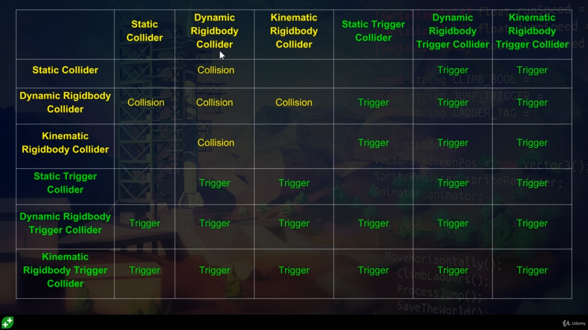
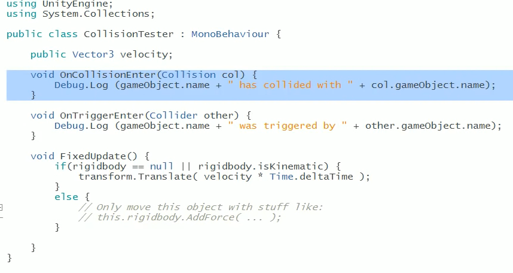

Lecture 09 - Unity Physics / Collision
Lecture Overview
3DIMD and XR Multimodal Interaction
5MMCS007W/5CCGD013W Lecture 10
Unity Physics /Collision
Unity UI Physics, Collision and Triggering
Interactive Examples
https://www.blend4web.com/apps/dairy_plant/dairy_plant.html?v=93906d9bd04fe610df690c519724295f
Video: Immerse Framework for Unity3D
GameObject Dynamics Options - Static, Kinematic and Dynamic
GameObject Dynamics Options
Video: Unity Physics: Static, Kinematic, Dynamic
Static, Kinematic RigidBody and Dynamic RigidBody
- Static - No Movement, no Effects (Static ticked)
- Kinematic RigidBody (RigidBody, IsKinematic, Static Not ticked)
- Can be moved, no forces affect it
- It can affect Dynamic RigidBody Game Objects
- Unity Transform (Translate, Rotate, etc.) to move it
- Dynamic RigidBody (RigidBody, No IsKinematic, Static Not ticked)
- All forces affect it and other Game Objects
- Unity Physics (addForce) to move it
- Gravity (can be on or off)
Unity Collisions Dynamics Options
Game Objects with RigidBody, Collision:
- Static – no movement, no effects
- Gravity On - Will fall
- Gravity Off, IsKinematic Off
- Acts as Static, but forces affect
- Kinematic: IsKinematic on, Gravity on
- May be moved, but not affected by forces
- Compare to Static collider: SC Is not calculated for – optimised
- Is Kinematic cancels out Gravity
- Kinematic: IsKinematic On, Gravity Off
- Acts as static, but is real collision
- Dynamic: IsKinematic Off, Gravity On or Off
- Uses Forces
Unity Collisions and Triggers
Unity Collisions and Triggers
- Collision Detection - Needs:
- Collider Shape – can be edited to taste
- IsTrigger in Collider Off
- OnCollisionEnter(Collision Col)
- Trigger Detection – Needs
- Collider Shape – can be edited to taste
- IsTrigger in Collider On
- OnTriggerEnter(Collider Other)
Unity Collider and Trigger Matrix

Unity Collisions for Triggers
Unity Collisions for Triggers
Unity Collisions for Triggers Does not "Collide", detects intersection for trigger
- Needs: Collider Shape and Script for Trigger Detection - OnTriggerEnter(Collider other)
- Dynamics: Objects can be Static or Non Static (Animated, Scripted Movement, no Physics)
- Static Collider – cannot have two!
- Static Trigger Collider
- Collider
- Trigger Collider
- Trigger Collider
- IsTrigger On = Objects Now Pass through, needs overlap, not collision !
- Detects if another collider entered
- IsKinematic RB Collider to IsKinematic RB Collider do not need IsTrigger On
- Moving a static object will give unwanted results
- Script: Use OnTriggerEnter(Collider other) to perform functions upon detection
- Dynamics: Objects can be Static or Non Static (Animated, Scripted Movement, no Physics)
Unity Collisions - True Collision Detection
Unity Collisions again
Unity Collisions
Collider hitting Rigid Body/Collider (for Collision Detection)
This is true Collision Detection, not Triggering in slide above
- Collision and Physics: OnCollisonEnter(Collision col)
- RigidBody enables a collision - Solid
- True RB - should only move by forces - ideal situation
- IsKinematic RB, or No RB can use movement scripting
- IsTrigger Off enables a collision - Solid
- RigidBody enables a collision - Solid
Gravity, Static, IsKinematic and Dynamic
Collider hitting Rigid Body/Collider (Collision Detection)
- Gravity - on off
- Static - No Movement, no effects
- Is Kinematic - Can be moved, no forces affect - on off
- IsKinematic On - Use Transform
- Dynamic - Physics, Rigid Body - all forces affect it and others
- Controls whether physics affects the rigidbody.
- IsKinematic off - Use forces
- Collision and Physics:
Video: Unity Explained - Colliders - Beginner Tutorial
Collision and Physics: SHORTCUT
- Shortcut
- Kinematic RB Trigger Colliders - transformed to move
- True RB - Addforce
- Movement Scripting
Linking Rigidbodies to the XR Interaction Toolkit (XRIT)
Linking it to XRIT…
A Rigidbody is required for an object to be grabbable using the Unity XR Interaction Toolkit (XRIT) XRGrabInteractable component.
Automatic Addition: When you add an XRGrabInteractable component to a GameObject, Unity will automatically add a Rigidbody component if one is not already present.
Purpose: The Rigidbody handles physics simulation (gravity, falling, collisions) when the object is released or thrown.
Kinematic Handling: While grabbed, the XRGrabInteractable often sets the Rigidbody to be Kinematic (i.e., isKinematic = true). This tells the physics engine that the object's movement is driven by the VR controller's position, not by forces like gravity.
Alternatives: If you use the "Instantaneous" movement type, the object follows the hand transform directly, but it generally still requires a Rigidbody to interact properly with the XR interaction system's collision detection.
Key Movement Types for XRIT Rigidbody Handling…
- XRGrabInteractible: Rigidbody behavior during interaction
- Instantaneous
- Direct movement by setting transform each frame
- Kinematic
- isKinematic while grabbing, moving via Rigidbody.MovePosition
- Velocity Tracking
- Calculates velocity/angular velocity to move the object via physics – can push other objects without lagging behind the hand
- Instantaneous
Essential Setup for Grabbable Objects:
- Collider: To define the collision boundary and allow interaction.
- Rigidbody: For physics behavior.
- XR Grab Interactable: To handle the grabbing logic.
It is highly recommended to ensure the Collider is not set to "Is Trigger" unless you have a specific reason to do so, as this affects collision detection.
Unity Collisions and Triggers Test Project
Unity Collisions and Triggers
Video: Unity 3d: Collisions, Triggers, Rigidbodies, and Kinematics
Unity Collisions and Triggers Test Project

Demo:
- Make Cube and Sphere - have colliders - play - nothing, can move, but is bad (unoptimised) essentially static, even if not ticked
- RB on ball - real and physical - gravity and Collision with cube - physics engine - may just need trigger
- Add script to both - 90% just need triggers
- Collision or trigger notifies both objects
- Collision: When True RB hits collider (not trigger)
- Try box with and without IsTrigger and look at console
- Turn box non-static (RB) - add RB, has gravity, will fall - turn off gravity - then collision moves it
- Turn Box into IsKinematic - Box not moved - IsKinematic (may be moved - no Physics) vs Static (will never move - 0ptimised)
- Turn Sphere to IsKinematic - no movement, but dragging - they do not affect each other
- IsKinematic RB with IsTrigger
Character Controllers and Next Steps
Character Controller Overview (Extra)
3 Options
- Non-RB custom (Unity CC) - not good with physics
- Dynamic RB
- Kinematic RB
Video: How to Move Characters In Unity 3D | Character Controllers Explained
https://discussions.unity.com/t/character-controller-vs-rigidbody/909343/5
Physics (dynamic or kinematic RB)
Video: Making A Physics Based Character Controller In Unity (for Very Very Valet)
https://discussions.unity.com/t/rigidbody-3d-platformer-controller-condfused/847979
Platforms:
Video: Simple Moving Platform Setup Rigidbody/Character Controller - Unity Bolt Tutorial |Visual Scripting
After more than 4 hours stuck with this video + Character controller, I will only say this: Edit -> Project Settings -> Physics (or Physics 2d) -> Auto Sync Transforms
From <https://www.youtube.com/watch?v=2MkNoaWJWf4>
the trigger must not intersect main collider on the platform.
From <https://www.youtube.com/watch?v=2MkNoaWJWf4>
Basic: parent character transform to new platform when platform collider triggered
Video: How to Create 3D Moving Platforms (Unity Tutorial)
https://discussions.unity.com/t/charactercontroller-on-a-moving-platform/684563/7
https://discussions.unity.com/t/how-to-get-a-character-to-move-with-a-moving-platform/1720
Software Architecture
Forefront